What the first real runs on CORE-Bench show: how often a paper reproduced, what the agent got right, where it failed, what it cost, and which fixes give the most for the least.
Bottom line. On 20 real CORE-Bench papers (medium level, Haiku 5.5, 30 minutes each), Repro Bot reproduced 14 in at least one run, at a median of 5.7 minutes and about 4.5 cents per reproduced paper. In 54 recorded answers it never reported a wrong number: the only 2 misses were the text "no answer" typed into the answer field. Apart from one harness crash, every failure traced to the environment (mostly R packages on the first sandbox image) or to compute (training that needs more than 30 CPU minutes, or a GPU). Fixing the environment between cycles doubled the reproduction rate on the same 11 papers, from 4 to 8.
The two weak spots for the pitch: Haiku never used the subagents unless forced, and 61% of tokens went to runs that ended at the time limit.
71 run directories exist. This evaluation scores the 45 real-model runs on CORE-Bench papers: 36 ran to the end and 9 were cut off at 18:13 UTC when the OpenRouter account ran out of credit. Those 9 are reported as "not run", never as agent failures. The rest are 8 runs of the toy task (all reproduced, 6 on Haiku and 2 on Opus), 2 arXiv-mode runs, and 16 offline replays used to test the harness.
The 20 papers come from CORE-Bench's public train split: 12 in Python and 8 in R, spread over computer science (8), social sciences (7) and medical sciences (5). Eight papers have questions that must be read off a figure. All CORE-Bench runs used Haiku 5.5 at the medium level, where the Dockerfile and REPRODUCING.md are kept but the authors' results are removed.
Small sample. Most papers ran once or twice, so a single flip moves a rate by 5–10 points. The confidence intervals are Wilson 95% intervals. Read the comparisons as direction, not precision.
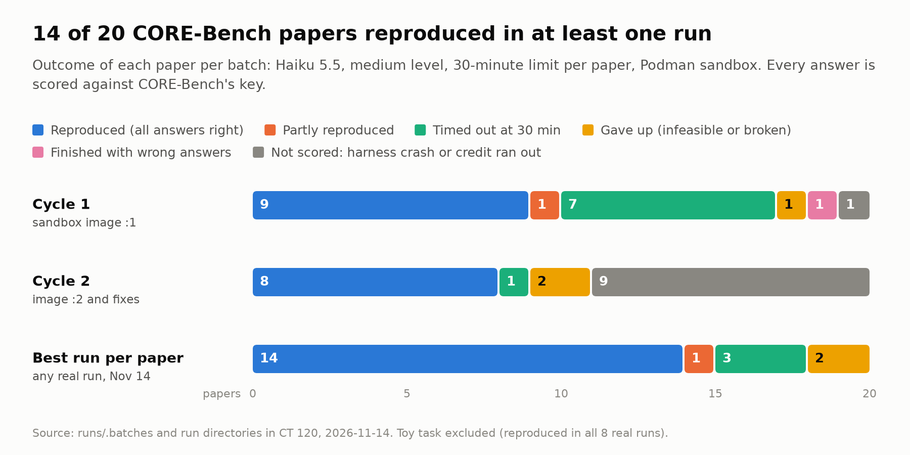
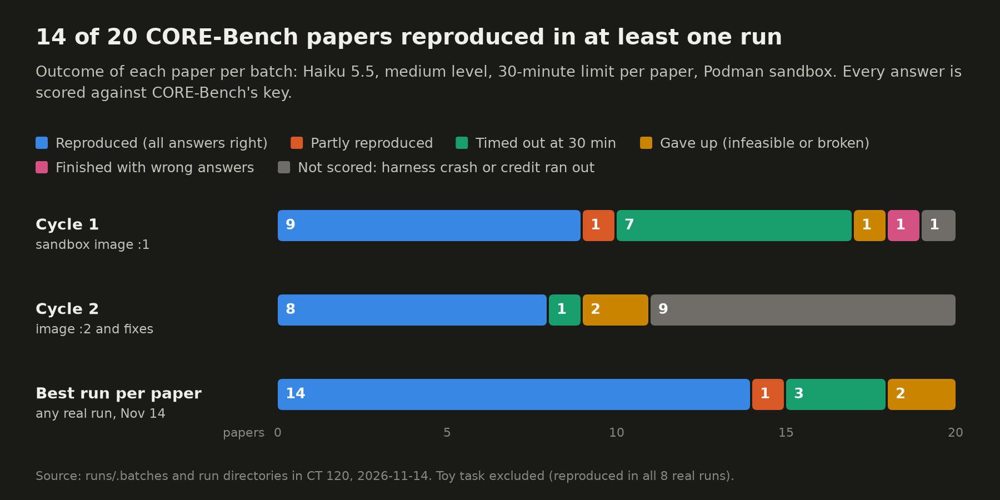
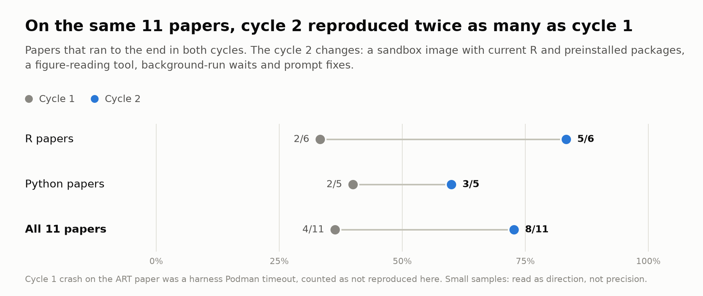
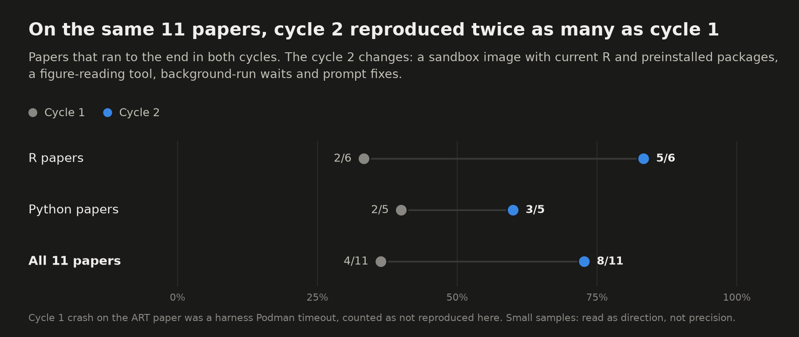
| Metric | Value | 95% CI | What it means |
|---|---|---|---|
| Paper pass@any (best of 1–3 runs) | 14/20 · 70% | 48–85% | Reproduced in at least one real run |
| Paper pass@1, cycle 1 | 9/20 · 45% | 26–66% | First attempt, sandbox image :1 |
| Cycle 2, papers that ran to the end | 8/11 · 73% | 43–90% | 9 more were cut off by credit |
| Run success rate | 21/36 · 58% | 42–73% | All real CORE-Bench runs that ran to the end |
| Answer accuracy | 52/77 · 68% | 56–77% | Every question, blanks counted as wrong |
| Answer coverage | 54/77 · 70% | Questions the agent gave a value for | |
| Answer precision | 52/54 · 96% | 87–99% | Right when it answered; 0 wrong numbers |
| Partial credit in failed runs | 1/26 · 4% | Failed runs leave blanks (23 of 26) instead of guessing | |
| Run-to-run consistency | 8/13 | Papers with 2+ runs and the same outcome each time. Of the 5 flips, 3 are the cycle 2 fixes, 1 is the harness crash, 1 is flaky (cb-1906954) | |
| Toy task | 8/8 | 6 Haiku and 2 Opus runs, about 94k tokens and 40 s each |
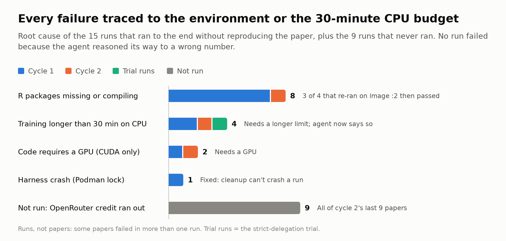
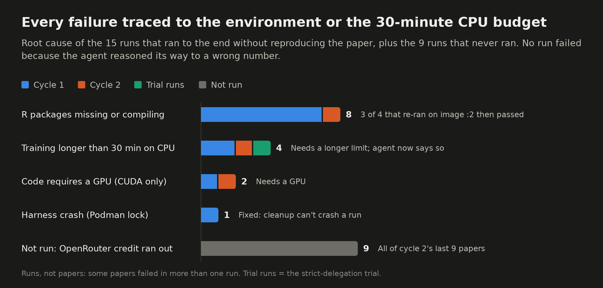
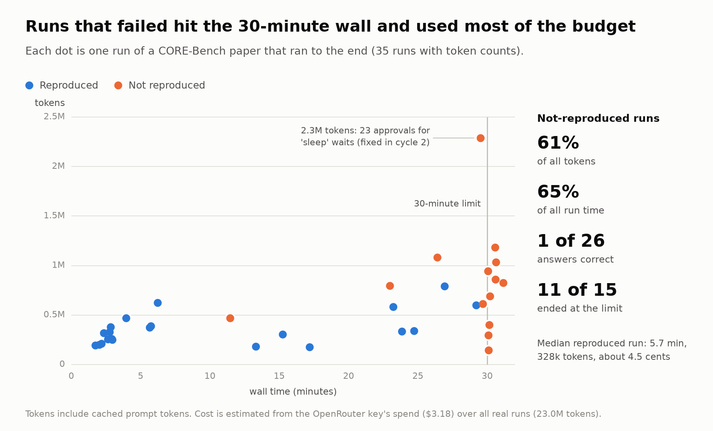
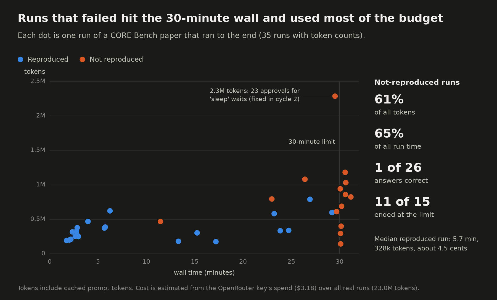
| Failure point | Runs | Evidence | Status |
|---|---|---|---|
| R packages missing or compiling for 20+ minutes | 8 | Matrix needs R ≥ 4.4; Ubuntu's R 4.3 compiled from source until the limit | Mostly fixed image :2; 3 of 4 re-runs passed |
| Training longer than 30 minutes on CPU | 4 | TensorFlow ensemble, 150 epochs (about 50 min); a 1000-tree survival forest | Open needs a longer limit |
| Code requires a GPU | 2 | torch.cuda.FloatTensor; about 9 min per epoch on CPU | Open needs a GPU |
| Harness crash | 1 | podman rm timed out while an image build held the storage lock | Fixed |
| OpenRouter credit ran out mid-cycle | 9 | PaymentRequired from 18:13 UTC; the account had $15, other usage took most of it | Needs credit batch now stops on it |
| Approval flood while waiting | 1 | 23 approvals for sleep waits and 2.3M tokens in one run | Fixed cycle 2 max is 8 |
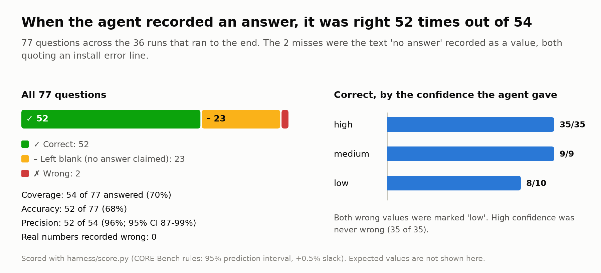
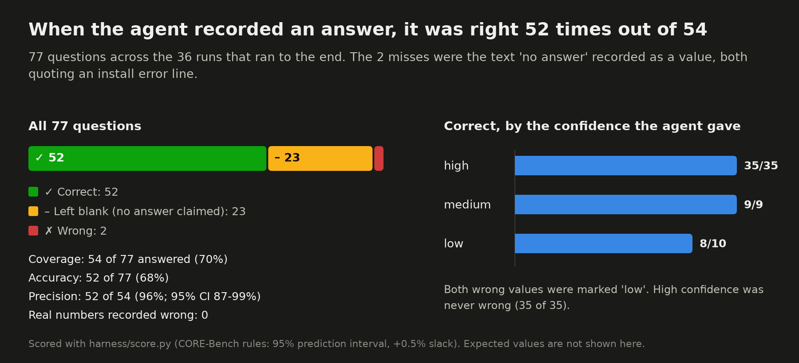
The two wrong answers came from one cycle 1 run (cb-1324693) that couldn't install its R packages. The agent called record_answer with the value "no answer" and quoted the line installation of 7 packages failed:. The evidence check accepted it, because it only checks that the quote appears somewhere in the run's output, not that the quote contains the value. 51 of the 54 quotes do contain their value; the third is a figure answer described in words.
Figure questions did as well as text questions: 14 of 21 (67%) against 38 of 56 (68%). Twelve answers cite a rendered figure as evidence, read through the look_at_figure tool.
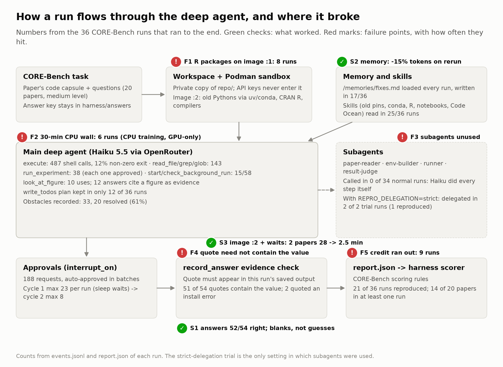
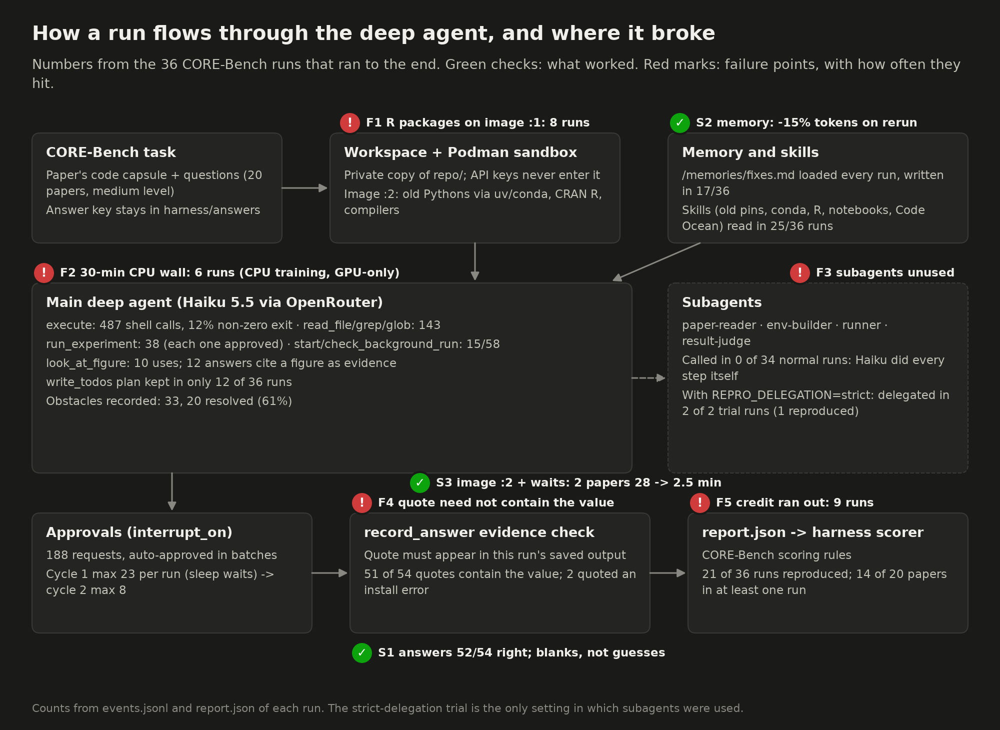
execute in a sandbox. 487 shell commands, 12% with a non-zero exit, each one read and acted on. Obstacles were logged 33 times and 61% were resolved in the run.write_todos plan exists in only 12 of 36 runs. Runs with a plan didn't do better (6 of 12 against 15 of 24 without), so this matters for the story more than the score.cat paper.md or echo.run_experiment fails often. 16 of 38 experiment commands exited non-zero, so the first attempt at running a paper often needed a second.| Category | Papers reproduced | Runs reproduced | Note |
|---|---|---|---|
| Python | 8/12 | 13/21 · 62% | Open papers: 3 compute-bound, 1 blocked on R dependencies |
| R | 6/8 | 8/15 · 53% | Cycle 1: 2/8 runs. Cycle 2: 5/6 runs |
| Computer science | 6/8 | 11/16 · 69% | Both open papers train models |
| Social sciences | 5/7 | 6/13 · 46% | All R; open papers never re-ran on image :2 |
| Medical sciences | 3/5 | 4/7 · 57% | The open ones are survival analyses |
| Figure questions | 14/21 answers | Same rate as text questions (38/56) |
| Metric | Value | Note |
|---|---|---|
| Median wall time, reproduced / failed | 5.7 / 30.1 min | 11 of 15 failures ended at the limit |
| Median tokens, reproduced / failed | 328k / 809k | Includes cached prompt tokens |
| Tokens per correct answer | 368k | All 36 completed CORE-Bench runs |
| Estimated cost per reproduced paper | about 4.5¢ | $3.18 key spend over 23.0M tokens, about $0.14 per million |
| Cost of a 20-paper Haiku cycle | about $1.70 | Cycle 1 used 12.0M tokens |
| Tool calls that failed | 86/776 · 11% | execute 12%, run_experiment 42% |
| Approvals per run, median (max) | 2.5 (23) | Cycle 1 max 23, cycle 2 max 8 |
| Runs that used subagents | 0/34 | 2/2 with REPRO_DELEGATION=strict |
| Runs that kept a plan | 12/36 | Plan-first prompt written, not yet tested |
| Unapproved changes to the paper's files | 2 runs | Both look like files the code rewrites itself (.RData outputs, a .pyc) |
Best result across all real runs that ran to the end. Expected values are left out on purpose, so whoever tunes the agent next can read this without seeing the answer key.
| Capsule | Paper | Lang. | Field | Qs (fig) | Runs | Best result | Cause, if not reproduced |
|---|---|---|---|---|---|---|---|
| 6460826 | CULP: classification using link prediction | Py | CS | 6 (0) | 2 | 6/6 | |
| 1108125 | Payments for ecosystem services, Vietnam | R | Social | 4 (1) | 2 | 4/4 | |
| 6746514 | Diagnosis of epilepsy from EEG | Py | Medical | 3 (3) | 1 | 3/3 | |
| 2916503 | Data analysis tools for open science | R | Social | 3 (0) | 2 | 3/3 | Cycle 1: R packages |
| 0940461 | WABL defuzzifier in fuzzy gradient boosting | Py | CS | 2 (0) | 3 | 2/2 | |
| 1324693 | Self-esteem and dependency regulation (replication) | R | Social | 2 (2) | 2 | 2/2 | Cycle 1: R packages, "no answer" recorded |
| 1906954 | Reducing meat consumption: what works? | R | Social | 2 (0) | 3 | 2/2 | Flaky: dev run passed, both cycles timed out installing R packages |
| 4098236 | Multi-label classification via ART clustering | Py | CS | 2 (0) | 3 | 2/2 | Cycle 1: harness crash |
| 5975162 | ExPSO: exponential particle swarm optimization | Py | CS | 2 (0) | 1 | 2/2 | |
| 9168639 | Ethics committees and a priori sample sizes | R | Medical | 2 (2) | 2 | 2/2 | |
| 2011424 | Fuzzy-temporal gradual patterns (BorderT-GRAANK) | Py | CS | 1 (0) | 2 | 1/1 | |
| 2061060 | Delphi study on psychology methods training | R | Social | 1 (1) | 2 | 1/1 | Cycle 1: R packages |
| 3497606 | Super-iterative image reconstruction for tomography | Py | Medical | 1 (1) | 1 | 1/1 | |
| 5286757 | Label-aware graph representation, trajectory prediction | Py | CS | 1 (0) | 1 | 1/1 | |
| 5496369 | Metabolomic predictor for gastric cancer | Py | Medical | 2 (2) | 2 | 1/2 | Survival forest (1000 trees) over 30 min on CPU |
| 0238624 | University admission prediction, stacked ensemble | Py | CS | 2 (0) | 2 | 0/2 | TensorFlow, 150 epochs: about 50 min on CPU |
| 9370340 | Neurons learn by predicting future activity | Py | CS | 1 (0) | 2 | 0/1 | CUDA-only code |
| 3137115 | Analytic reproducibility of open-data-badge articles | R | Social | 4 (1) | 1 | 0/4 | Cycle 1: R packages. Cycle 2: cut off by credit |
| 3894632 | DAPPER leiomyosarcoma survival analysis | Py | Medical | 1 (0) | 1 | 0/1 | Cycle 1: R dependencies. Cycle 2: cut off by credit |
| 6133093 | Subtle media bias and perceptions of terrorism | R | Social | 1 (0) | 1 | 0/1 | Cycle 1: R packages. Cycle 2: cut off by credit |
Three of the six unreproduced papers (3137115, 3894632, 6133093) never got a complete run on image :2, the image that fixed most R papers. They are the most likely to flip with one more run.
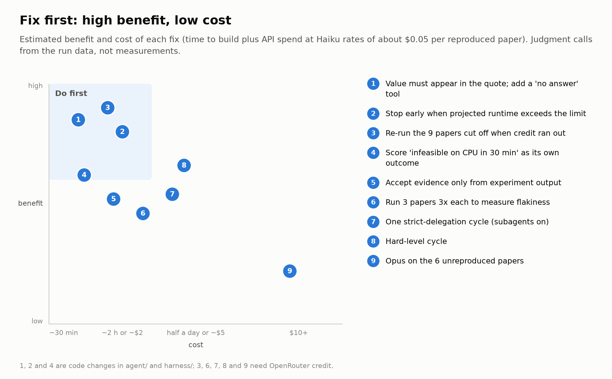
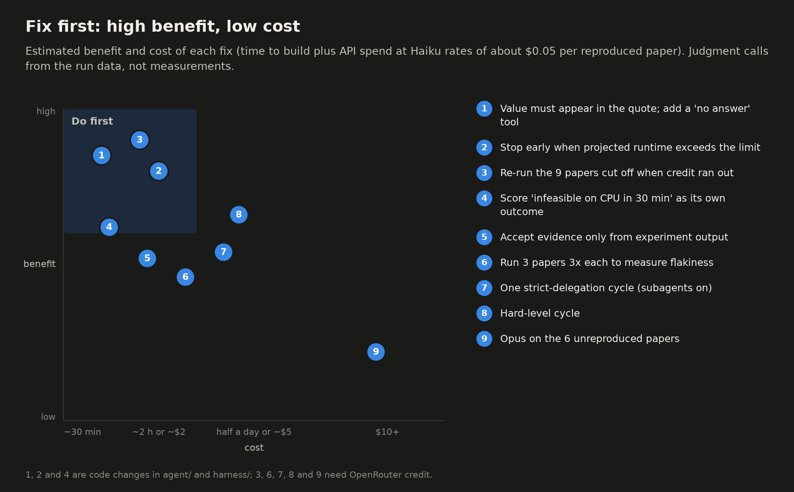
| # | Fix | Why, from the data | Cost |
|---|---|---|---|
| 1 | In record_answer, require the value to appear in the quote; add a way to record "no answer" with a reason | Both wrong answers in the data came through this gap | About 30 min, agent/task.py plus a test |
| 2 | Re-run the 9 papers cut off when credit ran out | Completes cycle 2. Three of them never had a full run on image :2, and image :2 reproduced 73% of comparable papers | About $1 and an hour at --parallel 5; needs credit |
| 3 | Stop early when the projected runtime exceeds the limit (time the first epoch or step, then extrapolate) | 61% of tokens and 65% of run time went to runs that ended at the wall | 1–2 h: a prompt rule plus a projection in check_background_run |
| 4 | Score "infeasible on CPU in 30 min" as its own outcome on the scoreboard | 6 failed runs (3 papers) are compute limits, not agent failures. Makes the headline honest both ways | About 30 min in harness/batch.py |
| 5 | Accept evidence only from experiment output, not from cat or echo | Closes the remaining way to quote a number the code didn't compute | About 1 h |
| 6 | Run 3 papers 3 times each | Only 1 of 13 repeated papers is known to be flaky; a measured pass^k makes the claim solid | About $0.50 |
| 7 | One cycle with REPRO_DELEGATION=strict | The deep-agents story needs subagents; the trial delegated 2 of 2 times | About $2–3 |
| 8 | Hard-level cycle | Task directories are fetched; shows whether the agent copes without the Dockerfile | About $2–3 |
| 9 | Opus on the 6 unreproduced papers | Their causes are compute and environment, which a stronger model won't fix | About 40× Haiku; low value |
execute, approvals, memory, skills and the figure tool all appear in the run data. Be upfront that Haiku skipped the subagents unless forced. If fix 7 runs before the demo, show it.metrics.json and the per-run dataset are in /home/claude/repro-agent/eval/2026-11-14/ on the Proxmox host.